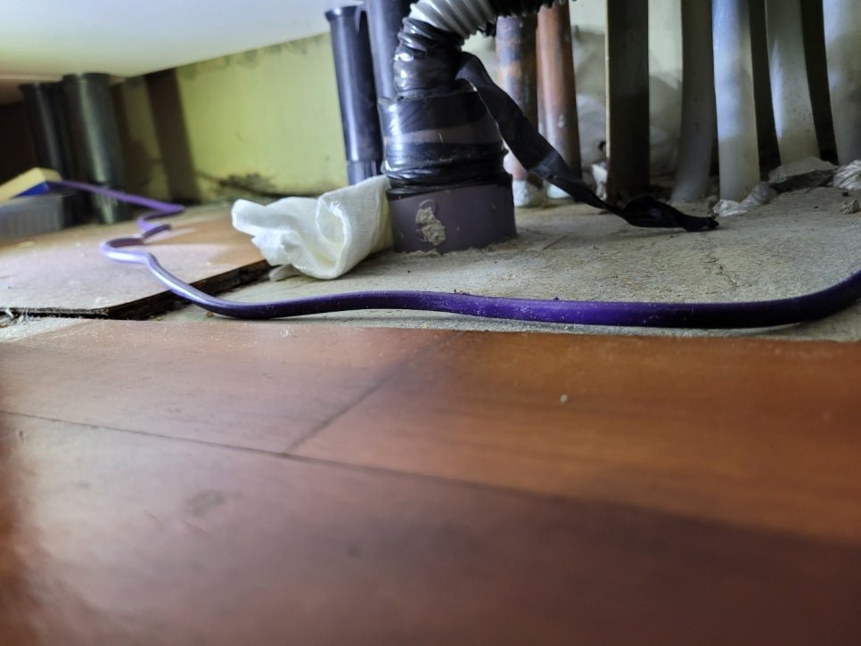
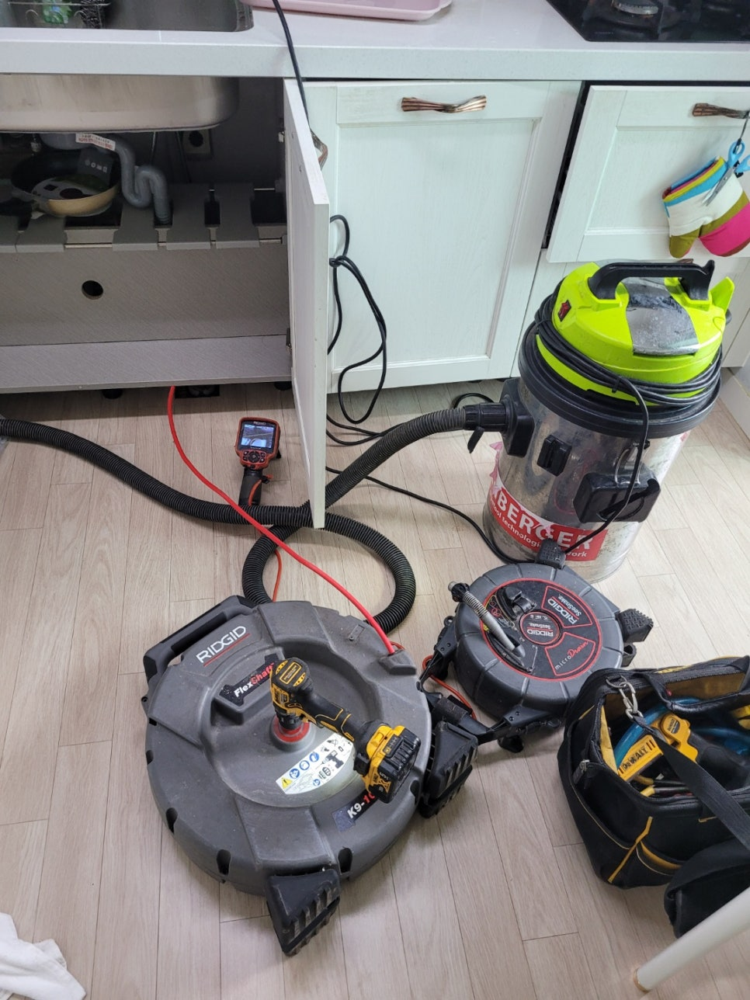
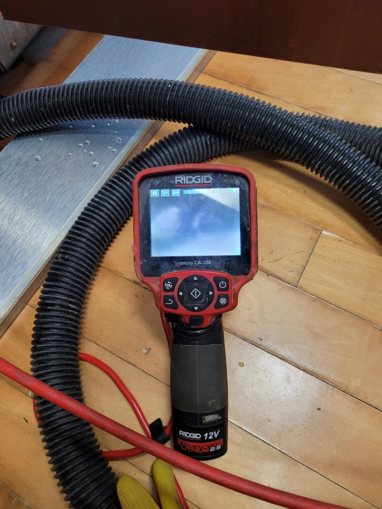
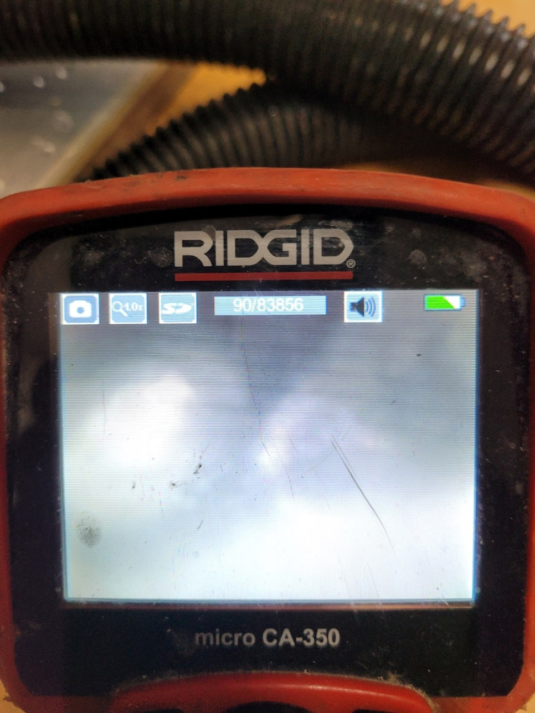
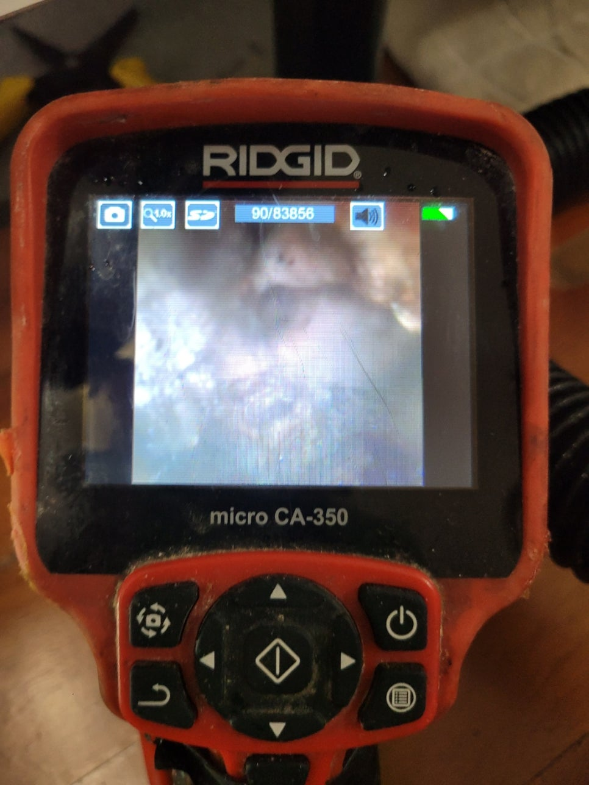
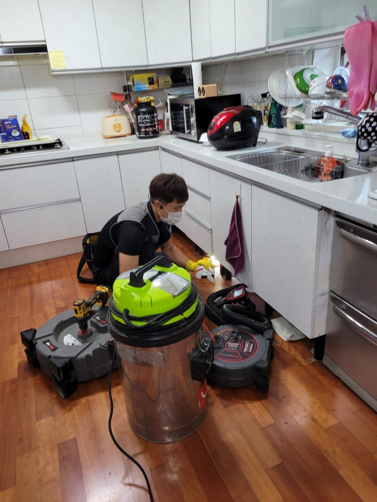
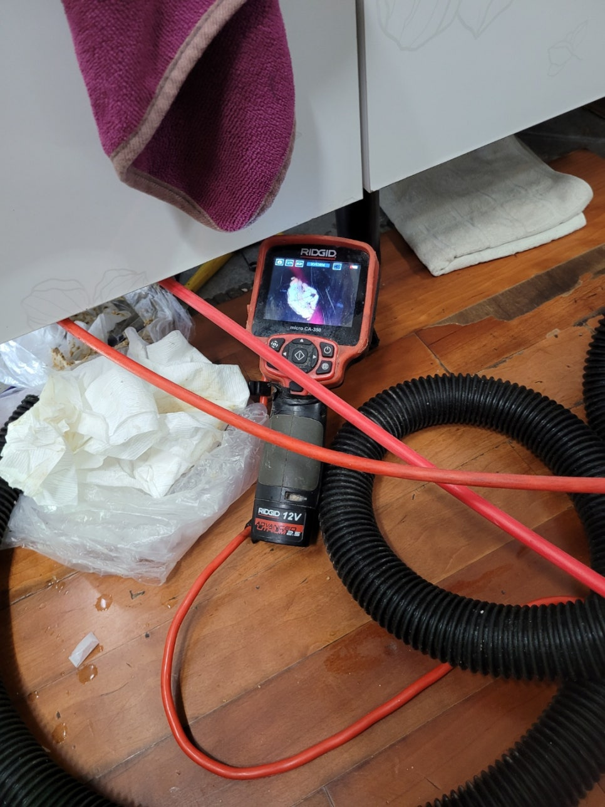

🏠 기흥구싱크대막힘 동백동 상하동 배관막힘해결
용인 기흥 싱크대막힘 전문 시공 후기

📋 작업 개요
- 위치: 용인 기흥, 기흥, 용인
- 서비스 유형: 싱크대막힘, 하수구막힘, 배관막힘, 역류해결, 뚫는업체, 배관청소
- 작업 일시: 2022. 9. 20. 11:03
- 업체명: 하수구수사대 (010-5615-2118)
🔍 문제 상황
기흥구싱크대막힘 동백동 상하동 배관막힘해결
안녕하세요
하수구배관케어 전문업체
"하수구수사대" 입니다.
싱크대막힘 증상중에 제일많이 보이는곳이
하부장에서 물이 역류하는 증상입니다. 특히
물을 조금씩 흘려보내면 괜찮지만 한번에 많은양을 부었을때
역류하는 증상은 배관이 좁아진 상태라는걸 짐작할수 있어요.
싱크대막힘을 방치하게 되면 음식물 찌꺼기들이 오랜기간
쌓여 딱딱하게 되고 점점 심하게 막히게 됩니다.
주방을 자주 이용하면 어쩔수 없는 기름성분이 흘러들어가게
되고 하수구에 침체되면 쌓이게 마련인데요
흔한 일이라 생각하고 전문업체 도움 없이

🔎 원인 분석
💡 전문가 진단: 정밀 진단 장비를 사용하여 슬러지의 고착 여부를 판명하고 타격/세척 작업을 실시했습니다.
해결 하다가 오히려 더 막히는 증상이 나타나곤 합니다.
기흥기싱크대막힘 동백동 상하동 배관막힘해결
특히 펑크린이나 뚜러펑 같은 약품을 사용하면 오히려
더 막히는 증상을 느끼셨다면 배관안에 기름 덩어리가 상당히
많아 오히려 더 막히는 증상이 나타난답니다.
이번 현장도 고객님께서 싱크대가 막혀 스스로 뚫어보려고
하셨지만 도제히 해결될 기미가 보이지않아
저희 "하수구수사대"를 찾아주셨는어요.
현장을 도착하여 가볍게 인사를 나눈뒤 주방 상황을
체크해 보았습니다.
싱크대는 하루아침에 나타나기 보다는 전조 증상이 있었을텐데요
예를들면 물을 한바가지 흘려내리면 배관이 비어있는 소리가
나지 않는다던가 평소보다 물빠짐이 느리다면 의심해 볼 필요가 있습니다.

🔧 작업 과정
고객님께서도 잘 내려가던 싱크대물이 며칠전부터 조금씩 내려가는
속도가 느려지더니 갑지기 하부장에서 물이 조금씩 새어나오는걸 확인하셨어요.
내시경카메라로 내부를 확인해보니 기름덩어리가 떨어져
막고 있는것을 확인하였습니다. 우선적으로 셕션작업으로 배관내부에
떨어져 있는 이물질을 흡입하여 주는작업을 시작합니다.
그 다음 배관 내부에 붙어있는 기름덩어리를 제거하는 작업을
해주어야 하는데요 단순하게 스프링장비로 뚫어주기만 한다면
얼마 가지않도 또 막히게 되기 때문에 청소를 해줘야해요.
그리도 더욱 깨끗하게 청소하기 위해 내시경카메라를
넣고 플렉스샤프트장비로 보면서 기름들을 제거해 나가는
작업을 진행합니다.
분쇄하여 석션장비로 뽑아내고 갈아서 밖으로 배출하는
방법을 반복적으로 진행해요.
저희 "하수구수사대"는 내시경카메라로 일일이
확인을 하면서 작업을하고 고객님께도 깨끗하게
청소된 배관내부를 보여드리기 때문에
안심하고 사용하실수 있어요.
그다음은 관리요령이 중요한데요 기름이
배관에 붙지 않게 하기위해서는 한달에 한번정도
펑크린이나 뚜러펑같은 세정제를 부어주고


✅ 작업 완료
설거지후 물도 한바가지정도 흘려보내주면 배관에
기름기 붙지 않게 된답니다.
저희 "하수구수사대"는 최신장비도
어떠한 막힘도 해결가능하니 언제든지
연락주세요^^
경기도 용인시 기흥구 동백중앙로 191 8층 c8736호




⚠️ 주방 싱크대 배관 막힘 예방 수칙
- ✅ 기름기가 묻은 식기나 프라이팬은 설거지 전 키친타올로 반드시 기름때를 닦아내세요.
- ✅ 주기적으로 싱크대 개수대에 뜨거운 물을 가득 받아 한 번에 내려 배관 내부 기름을 씻어내세요.
- ✅ 배수구 거름망을 미세한 필터로 사용하시고 음식물 찌꺼기가 틈으로 새어 들지 않게 관리하세요.
- ✅ 베이킹소다와 식초를 뜨거운 물과 함께 일주일에 한 번씩 부어주면 배관 살균과 막힘 예방에 좋습니다.
💡 핵심 정리
- 확실한 장비 작업(내시경 점검 및 샤프트 스케일링)으로 원인을 뿌리 뽑습니다.
- 작업 후 1년 이내에 동일한 부위 재발 시 100% 무상 A/S 서비스를 보장합니다.
- 서울 · 경기 · 인천 전 지역에 24시간 언제든 긴급 출동할 수 있도록 항시 대기 중입니다.
❓ 자주 묻는 질문 (FAQ)
🚨 용인 기흥 싱크대막힘 문제로 고민이신가요?
정확한 원인 진단과 확실한 시공으로 재발 없는 해결을 약속드립니다.
24시간 긴급 출동 | 서울 · 경기 · 인천 전지역 | 1년 내 재발 시 무상 A/S